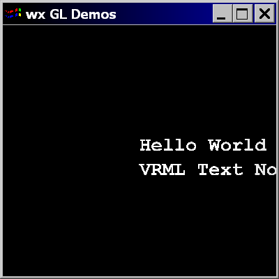

This document discusses rendering Text nodes in
OpenGLContext. On-screen bitmap text is rendered by a shader-based
texture-atlas provider that works in both the core and compatibility profiles,
and the FontTools-based provider produces polygonal (solid and outline) text.
Backend-specific providers (PyGame, wxPython, and a legacy GLUT bitmap provider)
are also available where their libraries are present.
Creating text with OpenGL is a rather involved process.
Generally speaking, it is necessary either to rely on a third party
library for rendering the text, or to manually generate the text from
some data source. OpenGLContext provides a framework in which
both approaches can be (and are) used.
On-screen bitmap text is drawn by a shader-based provider that renders
characters as textured quads from a pre-rendered font-atlas texture (DejaVu Sans
Mono at several sizes). Because it uses VAOs, VBOs and a texture rather than
glBitmap, glRasterPos or display lists, it works on an
OpenGL 3.3 core-profile context as well as the compatibility profile, and it
does not need a GLUT display.
The font provider registry prefers this shader-compatible provider for on-screen bitmap text in both profiles. In core profile the legacy fixed-function providers cannot run at all; in compatibility profile they remain available as a fallback. The GLUT bitmap provider in particular is served only inside a live GLUT context (its routines crash without one), so it is a fallback rather than the default.
The atlas textures are generated by
scripts/generate_font_atlas.py; the renderer picks the atlas whose
size is closest to the requested character height.
The FontProvider
class provides registration point for objects (font providers) which
wish to service requests from text nodes for representations of given FontStyles
(a VRML97 node). Each provider has a geometry "format" which
specifies the particular type of text that instances can render
('solid', 'outline', and 'bitmap' are the currently available
formats). When searching for a font, FontProviders with formats
which match the requested format will be given preference over those
which do not match, but if no matching providers are available,
whatever provider can match the style will be used.
The OpenGLContext text/font rendering system loosely follows the
VRML97 text-rendering system. A Text node defines two attributes,
string and fontStyle. String is actually an MFString value where
each value is a line to be displayed. The FontStyle node defines
the rendering parameters for the string value.
Here is an example of some VRML97 text content:
#VRML V2.0 utf8
Shape {
geometry Text {
string [ "Hello World", "VRML Text Node" ]
fontStyle FontStyle {
family [ "TYPEWRITER", "SERIF"]
style [ "BOLD"]
}
}
appearance Appearance { material Material { diffuseColor 1,1,1}}
}
You can view this sample with a command line something like this:
oglc-view tests/wrls/text_simple.wrl

Things that we will want to take note of:
topToBottom reverses the line order as VRML97
specifies. horizontal and leftToRight are
declared but not read, so text always runs horizontally and left to right,
whatever they are set toThe Font object is responsible for the actual rendering of the text.
It is called by the Text node's render method with the string to
be rendered. The Font is responsible for defining the appropriate
font, decoding the text to Unicode, generating the correct display-lists
for rendering characters in the given font, determining the display
metrics for the characters, and performing text layout.